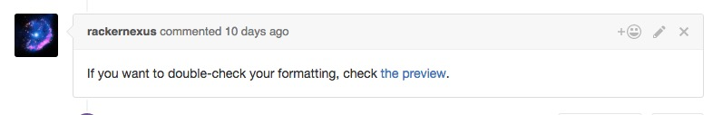
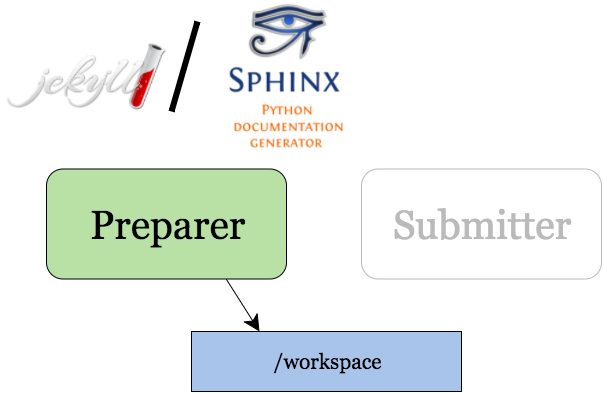
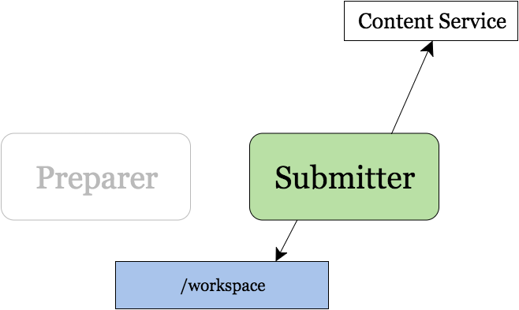

<!--
Outline:

 * Deconst: What & Why
   - developer.rackspace.com, support.rackspace.com, getcarina.com, docs.rackspace.com
   - Before: different processes, different people
   - What we didn't want: "We're using X now, everybody conform or be abandoned"
   - Unify: infrastructure; content; templates, CSS, JS; search; metrics; logging
   - Keep separate: GitHub repositories; documentation formats
 * Preview comments!
   - From very early: need to preview rendered content before it goes live
   - Make a pull request on a content repository
   - Bot account will post a link to a staging site
 * System components:
   - Content service: API for storing and retrieving "metadata envelopes" by content ID (a URI)
   - Presenter: URL -> content ID, get the envelope from the content service, render it with a template
   - Stateless containers behind a CLB; can scale horizontally as needed
 * "Staging mode"
   - Content service: Envelope not found? Cut first path segment, request from "upstream"
   - Presenter: Ignore first path segment for content and template mapping purposes
 * Strider
   - Opensource CI/CD server
   - Run a sequence of processes in Docker containers that mount a workspace DVC
   - Docker is important here: Sphinx's conf.py or Jekyll plugins are arbitrary code!
   - The "Preparer" runs Sphinx/Jekyll shimmed to output JSON files
   - The "Submitter":
     - queries the content API to see what's new
     - build tarballs of new assets and new envelopes
     - POST to the content API
   - If the submitter submitted something, derive the destination link and post it to the PR

-->

<section id="deconst-0">

  <h2>Documentation Previews</h2>

  

  <p>Ash Wilson</p>
  
  <aside class="notes">
    <p>Mic transition, intro</p>
  </aside>
</section>

<section id="deconst-1">
  <h2><a href="https://developer.rackspace.com/">developer.rackspace.com</a></h2>
  <h2><a href="https://support.rackspace.com/">support.rackspace.com</a></h2>
  <h2><a href="https://getcarina.com/">getcarina.com</a></h2>

  <aside class="notes">
    <p>These domains are all served by a single, open-source system called "Deconst"</p>
    <p>Not static sites</p>
    <p>Each site managed independently by different processes</p>
    <p>Making changes = hunting down the right person and sending email</p>
    <p>Publishing = all over the place; some Jenkins, some manual</p>
  </aside>
</section>

<section id="deconst-2">

  <h2>What we didn't want</h2>

  <a href="https://xkcd.com/927/">
    
  </a>

  <aside class="notes">
    <p>Avoid "Hey everybody, spend loads of time converting all your docs into our one true format!"</p>
    <p>Or even worse: "use the same tooling"</p>
    <p>Unify: infrastructure; search; metrics and logging</p>
    <p>Separate: GitHub repos; source formats</p>
  </aside>
</section>

<section id="deconst-3">

  <h2>Deconst</h2>
  <h3>Deconstruct your documentation</h3>

  

  <aside class="notes">
    <p>"Inverted CMS"</p>
    <p>Manage content with an API</p>
    <p>Bring together docs written in many places in many ways</p>
  </aside>
</section>

<section id="deconst-4">

  <h2>Preview links</h2>

  

  <aside class="notes">
    <p>Number one need from the day we shipped: ability to see content before it's live</p>
    <p>Needs to be accessible to a wide range of potential contributors</p>
    <p>Don't assume everyone has a good Ruby, Python, Node setup locally</p>
    <p>Vagrant/local Docker cause more yak-shaving problems</p>
    <p>No "staging server": complicated git workflows, only one person can use it at a time</p>
  </aside>
</section>

<section id="deconst-5">

  

  <p><a href="https://github.com/Strider-CD/strider">github.com/Strider-CD/strider</a></p>

  <aside class="notes">
    <p>Opensource CI/CD software called "Strider"</p>
    <p>Chosen because it's nice and twelve-factor, customizable</p>
    <p>Custom build plugins for content and control repositories</p>
  </aside>
</section>

<section id="deconst-6" data-transition="none-out">

  <h2>Preparer</h2>

  

  <aside class="notes">
    <p>Strider content build plugin runs two Docker containers in sequence</p>
    <p>First is the "preparer"</p>
    <p>An adapter between the host doc system and the JSON format the content service understands</p>
    <p>Writes assets and JSON documents to directories within a workspace volume</p>
    <p>Important to run in Docker, as a non-root user! Jekyll and Sphinx can both run arbitrary code</p>
    <p>Also keeps us from having to manage Ruby / Python / Node versions on the build host</p>
  </aside>
</section>

<section id="deconst-7" data-transition="none-in">

  <h2>Submitter</h2>

  

  <aside class="notes">
    <p>Query the content service with fingerprints to see which assets and documents are new</p>
    <p>Pack them in tarballs and bulk-upload them</p>
    <p>Strider watches the container's exit status</p>
  </aside>
</section>

<section id="deconst-8">

  <h2>Fin</h2>

  <p><a href="https://deconst.horse/">deconst.horse</a></p>
  <p><a href="https://github.com/deconst/">github.com/deconst</a></p>

  <aside class="notes">
  </aside>
</section>
